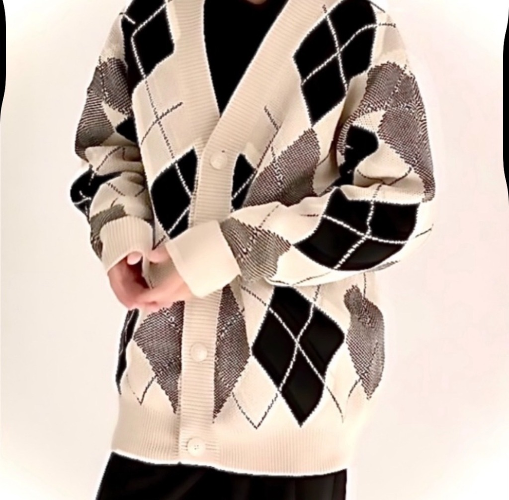

AOI NAKAGAWA高校生の時に起業家・経営者を志し、現在の協創経営プログラムへ進学しました。OpenAIのChatGPTが2022年11月にリリースされてからわずか3ヶ月後の2023年2月にはすでに触れており、その凄さを知っていました。そして、2025年3月25日にOpenAIから「ChatGPT-4o Image Generation」がリリースされた時、この技術に計り知れない未来を感じ、自身のすべてを注ぎ込むことを決めました。私は、AIのモデル開発そのものを行う立場ではありません。開発者への深い敬意を持ちつつ、私の役割は「最先端の技術をいかに社会へ実装し、人々の日常へ馴染ませ、イノベーションを普及させるか」にあります。アカデミアやテクノロジーの最前線にある便利な技術を、誰もが当たり前に使いこなせる世の中をつくること。それが、私が研究や情報発信活動を通じて目指す未来です。将来的には、組織や企業の意思決定にAIを統合し、イノベーションを経営レベルから牽引する『CAIO（最高AI責任者）』のポジションを見据え、この領域のパイオニアとして邁進していきたいと考えています。
生成AIに関する講演会、個別レクチャー、コンサルティングなどを受け付けています。経営者から官公庁、個人まで、あらゆる方々を対象に以下のようなサポートが可能です。